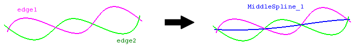

cfdmsh 4.0 documentation
cfdmsh 4.0 documentation cfdmsh 4.0 documentation


Creates a middle spline between two edges.
This function creates many equidistant vertexes on each input edge, then creates middle vertexes between each pair of vertexes and links them with a spline.
def MakeMiddleSpline( edges = [None], np = 20, cor = False, single = True, add = True, dim = 1 ):

| Name | Description | Type | GUI selection [?] | Selection by name [?] | Recursive [?] | Default value |
|---|---|---|---|---|---|---|
| edges | The edges between which to build the middle edge. | List of 2 Edges |
yes | yes | - | [None] |
| np | See here. | Integer | - | - | - | 10 |
| cor | If equals True, the edge orientation is automatically corrected. | Boolean | - | - | - | False |
| single | See here. | Boolean | - | - | - | True |
| add | See here. | Boolean | - | - | - | True |
| dim | See here. | Integer | - | - | - | 1 |
| dim Value [?] | single Value [?] | Type | Number | Name |
|---|---|---|---|---|
| 0 | False | Vertex | n | "MiddleSpline (Vertex)" |
| 0 | True | Compound of Vertexes | 1 | "MiddleSpline (Vertexes)" |
| 1 | - | Edge | 1 | "MiddleSpline" |
from cfdmsh import * # To adapt to the cfdmsh installation method
vertex1 = geompy.MakeVertex(-150, -100, 0)
vertex2 = geompy.MakeVertex(-75, 50, 150)
vertex3 = geompy.MakeVertex(25, 200, 175)
vertex4 = geompy.MakeVertex(200, 200, 25)
vertex5 = geompy.MakeVertex(75, 25, -50)
vertex6 = geompy.MakeVertex(25, -75, -100)
curve1 = geompy.MakeInterpol([vertex1, vertex2, vertex3])
curve2 = geompy.MakeInterpol([vertex4, vertex5, vertex6])
AddToStudy([curve1, curve2], "curve")
middle_spline = MakeMiddleSpline([curve1, curve2], cor = True)
middle_spline_vertexes = MakeMiddleSpline([curve1, curve2], cor = True, dim = 0)
Input edges should not touch each other.
tougeron-cfd.com © 2016